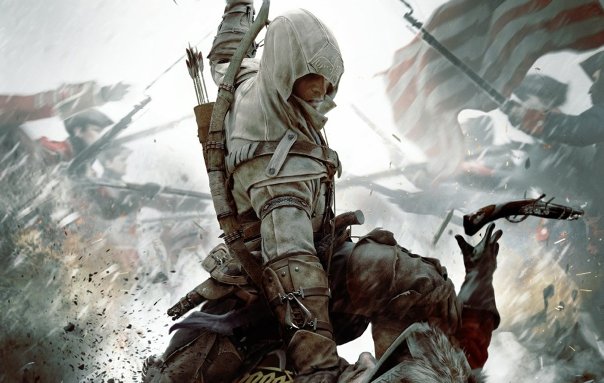

Игра рассказывает о Конноре, ассасине смешанного англо-индейского происхождения, который участвует в ключевых событиях Американской революции (1754–1783 год). Игра включает встречи с реальными историческими личностями, такими как Джордж Вашингтон, Бенджамин Франклин и Чарльз Ли. Хотя сюжет и персонажи частично вымышлены, игра старается воссоздать атмосферу эпохи, архитектуру, одежду и события. Однако акцент на фантастические элементы (например, древние артефакты) снижает историческую достоверность.

Год выпуска: 2012
Разработчик: Ubisoft Montreal
Достоверность: 7/10
Разработчик: Ubisoft Montreal
Достоверность: 7/10